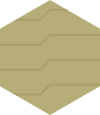

Die visuelle Sprache der Terrain-Tiles: kein blosses Terrain-Set, sondern ein lebendiges, zeitlich geschichtetes Landschaftsarchiv. Jedes Hex ist ein Fenster in eine Klimaregion Europas und des Nahen Ostens zu einer bestimmten Holozän-Stufe — auf einen Blick lesbar, funktional, emotional.
Dieses Dokument übersetzt das Art-Director-Briefing (unten) in geordnete Kapitel und hält fest, was unser Bestand (pipeline/assets/terrain/, sieben Kollektionen) davon schon trägt — und was noch fehlt.
Nicht verhandelbar — jedes Tile muss diese Schwelle erfüllen, unabhängig vom Stil.
Reines SVG, viewBox strikt auf das Hex-Seitenverhältnis (bei uns spitz-oben: 0 0 100 115.47 — das flache Äquivalent des Briefings 0 0 100 86.6, gedreht um 90°). Kein Raster, keine eingebetteten Bitmaps. Maximal 8–12 kB pro Tile nach Optimierung.
Muss bei 32 px Kantenlänge noch klar lesbar sein und bei 256 px noch Detail belohnen. Klare Silhouetten, keine Linien unter 1,2 px bei 100er-viewBox.
sRGB, maximal 12–14 Farben pro Tile plus 2–3 transparente Overlays. Keine Gradienten, die sich nicht sauber skalieren. Eine globale Palette als CSS-Variablen, damit der Client später Themes oder Kontrastmodi umschalten kann.
klimatile-stilguide-v1.html (Kap. 7) zeigt aber bereits das Muster in drei neuen Dateien: jede SVG trägt ihre Palette als lokale :root-CSS-Variablen. Ein zentral umschaltbarer Kontrastmodus bliebe trotzdem offen — dafür bräuchte es eine gemeinsame externe Palette statt einer pro Datei wiederholten.Von unten nach oben, immer gleich benannt:
| # | Layer | Inhalt |
|---|---|---|
| 1 | base-terrain | Bodenfarbe, Grundform |
| 2 | vegetation-primary | dominante Baum-/Strauchschicht |
| 3 | vegetation-secondary / water-features | Unterwuchs, Gräser, Gewässer |
| 4 | climate-indicators | Schnee, Dürre-Risse, Nebel |
| 5 | human-traces | sehr dezent, falls vorhanden |
| 6 | edge-mask | nahtloses Matching an den Kanten |
<g>-Layer — das bleibt die grösste strukturelle Lücke der Produktions-Assets. Als Referenz existiert seit dem Stil-Guide-Prototyp (Kap. 7) aber ein Template mit allen sechs Layern, an drei Kombinationen erprobt; die Übertragung auf den Terrain-Asset-Bestand selbst steht noch aus.Leicht abgerundet oder bewusst eckig — aber einheitlich. Kanten so gestalten, dass Nachbar-Tiles visuelle Kontinuität erzeugen können (Fluss, Waldgürtel, Steppenübergang).
clipPath), das erfüllt „einheitlich“. Die Übergangs-Gestaltung an der Kante selbst (Kap. 5) existiert aber noch nicht.Nicht jedes Kreuzprodukt muss existieren — priorisiere historisch/klimatologisch relevante Kombinationen.
| Stufe | ca. | Charakter |
|---|---|---|
| Preboreal / frühes Greenlandian | 11,7–9 ka | kalt, lückig, Pionier |
| Boreal | 9–8 ka | wärmer, noch trocken, Birke/Kiefer |
| Atlantikum / Climatic Optimum | 8–5 ka | feucht, warm, maximale Waldausdehnung |
| Subboreal | 5–2,5 ka | kühler, trockener, erste starke Eingriffe |
| Subatlantikum / Meghalayan | 2,5 ka–heute | moderne Klimasignale, intensive Kultivierung |
Jedes Tile bekommt eine klare Kombination, z. B. „Atlantikum × Mediterran“ oder „Subboreal × Pontische Steppe“.
flach/ufer/hang/water/lake/wald/berg/eis) sind reine Geländeformen ohne Klimaregion-Achse. Details und die Beziehung zu unseren bisherigen drei Epochen-Kollektionen: Kap. 8.Der eigentliche Art-Direction-Kern.
Stilisierte, fast holzschnittartige Illustration mit weichen, aber klaren Formen. Kein Realismus, kein Pixel-Art, kein Comic. Eine Mischung aus botanischem Lehrbuch, historischer Landschaftskarte und modernem Boardgame-Icon. Formen „atmen“ — leichte Asymmetrie, organische Kanten, immer lesbar.
linien kommt dem Icon-Charakter am nächsten; keine Kollektion erreicht bisher die holzschnittartige, „atmende“ Illustrationsqualität — die Texturen sind aktuell geometrisch-repetitiv (Punkte, Striche), nicht organisch gezeichnet.| Stufe | Palette & Stimmung |
|---|---|
| Preboreal/Boreal | kühl, desaturiert — blaugraue Himmel, blasse Grüntöne, viel offener Boden, silbrige Birkenstämme, vereinzelte Nadelbäume |
| Atlantikum | sattest, wärmste Farben — tiefes Grün, ockerfarbenes Licht, üppige Kronenschichten, klare Wasserflächen |
| Subboreal | leicht vergilbt, trockener — mehr Braun/Ocker, erste offene Flächen, beginnende Lücken im Wald |
| Subatlantikum | nüchterner, kontraststärker — menschliche Spuren sichtbar, nie dominant |
palaeolithisch → neolithisch → holozaen) fahren dieselbe Grundbewegung — kalt/karg zu warm/dicht —, aber in nur drei statt fünf Stufen und ohne die hier verlangte Klimaregion-Achse. Sie sind ein Ausgangspunkt für eine Verfeinerung, kein Ersatz für die Fünf-Stufen-Chronologie.
Jede der vier Tageszeiten des Kernloops trägt einen Grundton. Er hat zwei Aufgaben: als fester Ton markiert er, wann eine Karte lebt (Oberkante 3 px + Zeichen und Schrift der Art-Zeile) — eine Morgen-Karte bleibt morgenfarben, egal wie spät es ist. Als laufender Ton färbt er das UI der aktuellen Tageszeit: Phasenknopf, glühende Uhr-Zelle, Rundenmarke.
Drei Tageslichter und die Nacht. Die drei Lichter des Tages spannen den Farbkreis (Rosé → Gold → Teal), damit sie nebeneinander unterscheidbar sind — die erste Fassung führte den Morgen als Ember-Orange und stand damit zu nah am Mittagsgold. Die Nacht ist kein viertes Tageslicht, sondern ein eigenes Thema: sie wechselt ohnehin das ganze Register (body.night); ihr Mondlicht-Ton ist der Akzent innerhalb dieses Themas.
| Name | Tag | Nacht | Herleitung | |
|---|---|---|---|---|
| Morgen | Morgenrot | #C34F63 | #F07E90 | Rosé — der Himmel vor der Sonne; deutlich getrennt von Glut (--ember), Ziegel (--bad) und Gold |
| Mittag | Hohes Licht | #C08A10 | #EDBE3F | Sonnengold, das klare Arbeitslicht — verwandt mit --warn, aber eigenes Token |
| Abend | Stilles Wasser | #22897C | #4FC7B4 | der Fluss nimmt das Licht — kühles Teal der River-Familie; Kontrast zu Rosé und Gold wiegt schwerer als das physische Abendrot |
| Nacht | Mondlicht | #5D6FB4 | #96A8E8 | blaugraues Violett — die einzige kalte Blaufamilie der Palette, der Mond über dem Tal; Akzent im Nacht-Register, nicht viertes Tageslicht |
Dazu je Tageszeit eine Schrift auf dem Ton (--on-z-*: tags weiß, nachts dunkel — die Töne hellen im Nachtregister auf) und eine Fläche (12 % Ton in --bone, per color-mix, kein eigenes Token).
Einbau im Baukasten (sot.css „Tageszeiten", sot.js): Token --z-morgen…--z-nacht + --on-z-* in beiden Registern; feste Akzente über .z-* + .zeitrand; laufender Ton über SOT.zeit('abend') → body[data-zeit], worauf .primary und .tl-seg.now automatisch --zeit nehmen. Ohne SOT.zeit()-Aufruf ändert sich in keinem Prototyp irgendetwas — der Einbau ist additiv. Belegt in tageszeit-akzente-v1 (Prüfstand) und erkundung-v6 (Spiel).
| Region | Signatur |
|---|---|
| Mediterran | silbergrüne Oliven-/Steineichen-Silhouetten, terrassierte Hänge, trockene Bachbetten, warmes Kalkstein-Beige |
| Ozeanisch | dichte, weiche Laubwälder, feuchte Wiesen, Nebelschwaden, viele Wasserläufe |
| Kontinental | klare Baumreihen, offene Steppen-Wald-Mosaike, schärfere Schatten |
| Boreal | dunkle Nadelwälder, Moosteppiche, Tümpel, kühle Lichtstimmung |
| Arid/Naher Osten | flache Horizonte, Wadis, Tamarisken/Akazien-Gruppen, lehmige Töne, Salzkrusten/Löss |
| Alpin | Relief durch Schraffur/gestufte Ebenen, Schnee in höheren Lagen, Zwergstrauchheiden |
berg und hang zeigen aktuell nur Relief, keine regionsspezifische Vegetation oder Bodenfarbe.Drei Ebenen, für Lesbarkeit: 1. Dominant — die charakteristische Baum-/Strauchschicht der Region/Epoche. 2. Sekundär — Unterwuchs, Gräser, Heide. 3. Akzent — einzelne Landmarken-Pflanzen (eine markante Eiche, Dattelpalmen-Gruppe, Wacholder).
Fauna nur als sehr dezente Silhouette oder Spur — ein Hirsch am Waldrand, Zugvögel, eine Gazelle in der Steppe. Nie im Vordergrund.
wald zeigt bisher eine undifferenzierte Kronen-Cluster-Textur ohne Dominant/Sekundär/Akzent-Staffelung; Fauna-Spuren gibt es in keinem Tile.Ein Fluss wirkt organisch, wenn er sich wie eine Linie mit Gedächtnis verhält: er weiss, woher er kommt (Tangente), wie viel er trägt (Breite) und wohin er will (Mündung). Das Sechseckraster darf ihn tragen, aber nie takten — sobald das Wasser im Rhythmus der Felder pendelt, sieht man das Raster statt des Flusses. Sechs Regeln:
| Regel | heisst konkret |
|---|---|
| Die Tangente gehört beiden Feldern | Am Kantenübergang teilen sich Nachbarfelder eine Fliessrichtung (C1-Stetigkeit). Der Fluss kreuzt die Kante zwar immer in der Kantenmitte (fester Port, Kap. 5) — aber der geteilte Ort genügt nicht: erst die geteilte Richtung macht aus zwei Feldbildern eine Linie. |
| Der Fluss meidet die Mitte | Der Durchgangspunkt eines Feldes liegt nie exakt im Zentrum, sondern je Feld quer zur Fliessrichtung versetzt — gesät aus den Feldkoordinaten. Enges Tal (Berg daneben) = kleine Auslenkung, offener Talboden = weite Schwünge. |
| Breite fliesst, sie springt nicht | b = 6·√Q gilt weiter — aber die Breite interpoliert entlang des Laufs (Einlass-q → Auslass-q je Segment), statt je Feld konstant zu sein. Keine Stufe an der Feldgrenze. |
| Prallhang und Gleithang | Der Kiessaum gehört auf die Innenseite der Kurve (Gleithang), das Aussenufer (Prallhang) bleibt schmal und hart. Ein symmetrischer Saum ist die Signatur eines Kanals, nicht eines Flusses. |
| Verzweigt heisst ungleich | Die Schotterflur ist ein Hauptarm plus ungleiche Nebenrinnen, die an verschiedenen Punkten abzweigen und wieder münden, mit linsenförmigen Kiesbänken dazwischen. Nie n parallele gleiche Striche. |
| Die Mündung zeigt stromab | Ein Nebenlauf biegt vor der Mündung ein und trifft den Hauptlauf spitzwinklig in Fliessrichtung — nie im rechten Winkel. Und: der Bach ist kein Lineal — kleines Wasser schlängelt sich je Strecke mehr als grosses (weniger Trägheit). |
Zufall ist gesät, nicht gewürfelt: jede Auslenkung ist deterministisch aus Feldkoordinaten und Weltsaat — dieselbe Saat, derselbe Fluss; Screenshots bleiben reproduzierbar. Tiefe ohne Farbverlauf: ein dunklerer Talweg-Strich in der Bandmitte markiert die tiefste Rinne — flach und tokenrein.
Wortschatz fürs Briefing: Mäander · Prallhang/Gleithang · Kiesbank · Talweg · Furkation (verzweigter Lauf) · Mündung · Altarm (spätere Epochen).
Der Pinsel (SVG): drei Techniken machen aus einer Linie ein Ufer. 1. Rauschen verschiebt die Kante — feTurbulence (fraktales Rauschen, seed = Weltsaat) plus feDisplacementMap auf die fertige Wassergruppe: die saubere Vektorkante franst kontrolliert aus. scale ist die Pinselstärke, die Filterregion braucht Luft (gepolstertes x/y/width/height), und ein Filter auf der Gruppe hält Saum, Wasser und Talweg deckungsgleich verschoben. 2. Das Band ist ein Polygon, kein Strich — die Mittellinie wird je Stützpunkt beidseitig um die halbe Breite versetzt und gefüllt (Ribbon-Bau): nur so kann die Breite entlang des Laufs fliessen und der Saum je Seite verschieden breit werden; ein stroke kann beides nicht. 3. Schichten auf einer Geometrie — Saum unter Wasser unter Talweg, alle aus derselben Mittellinie erzeugt: ändert sich die Linie, wandern alle Ufer mit.
Die Schichtregel der Mündung: gezeichnet wird nie Lauf für Lauf, sondern in Schichten über alle Läufe — erst sämtliche Säume (aufsteigend nach Q), dann die Wasserkörper (Wasser + Talweg), ebenfalls aufsteigend nach Q. So schneidet der Nebenlauf durch den Kies des Hauptlaufs bis an dessen Wasserlinie, und das grössere Wasser deckt ihn dort sauber ab. Die Merkregel: nie liegt ein Ufer auf Wasser — wer mehr trägt, zeichnet später.
bandPfad), die Breite ist je Feld konstant, der Saum symmetrisch, die Verzweigung sind drei parallele gleiche Rinnen (±0,16·Feldhöhe), und die geraden Bäche (Westbach, Haldenbach) rendern als Lineale, die den Rhein senkrecht treffen. Jede der sechs Regeln ist verletzt — das Band-Modell selbst (Wasser als Band im Feld, gerechnet aus Q) trägt aber alle sechs ohne Umbau der Daten. Der Zielzustand steht in gewaesser-labor-v2 dem Bestand direkt gegenüber (?seed ?amp ?pinsel ?freq).Extrem zurückhaltend — der Mensch darf nie die Landschaft dominieren.
Nur in Subboreal und Subatlantikum, nur wo archäologisch sinnvoll. Niemals moderne Gebäude. Maximal: feine Pfadlinien; kleine Brandrodungs-/Feldflächen; angedeutete Hügelgräber oder Megalith-Silhouetten (sehr abstrakt); in Levante/Mesopotamien: frühe Bewässerungskanäle oder Siedlungspunkte als winzige, dunkle Punkte.
neolithisch/hang.svg zeigt bereits Terrassen — ein menschlicher Eingriff, aber deutlich präsenter gezeichnet als das Briefing für „extrem zurückhaltend“ vorsieht (Terrassen prägen dort die ganze Hangfläche statt als feine Spur zu erscheinen). Ein guter Kandidat für Überarbeitung, kein Beispiel für die Ziel-Zurückhaltung.

Damit Nachbar-Tiles zusammenpassen, nicht nur einzeln funktionieren.
Alle Tiles derselben Klimaregion teilen eine gemeinsame Bodenfarbe und eine gemeinsame Textur-Sprache (z. B. leichte Punktierung für Löss, feine Wellen für Mediterran-Boden).
Horizontlinie und Lichtquelle sind global konsistent — Licht kommt von links oben.
Wo zwei Tiles angrenzen können (Wald → Steppe), müssen die Kanten organisch wirken. Dafür eine kleine Übergangs-Bibliothek von Randmotiven anlegen. Keine harten Clipping-Masken an den Hex-Kanten, die beim Rotieren Probleme machen.
Flussbetten müssen an der Feldgrenze aufeinandertreffen — und der erste Reflex ist, alle Kurven × Breiten × Anschlüsse durchzupermutieren und jedes Paar aufeinander abzustimmen. Das ist die Falle des Kachel-Denkens: die Kombinatorik explodiert, und jede neue Form multipliziert sie. Der Abgleich gehört nicht in die Zeichnungen, sondern in einen Vertrag an der Kante — klein genug, um ihn aufzusagen. Was den Vertrag erfüllt, passt zu allem, was ihn auch erfüllt; das Innere des Feldes ist frei.
Im prozeduralen Regime (das Band, gerechnet — das Spiel heute) sind es vier geteilte Zahlen je Wasserkante, die beide Nachbarn aus derselben Quelle lesen:
| Zahl | Regel |
|---|---|
| Lage | immer die Kantenmitte, ohne Ausnahme (Entscheid, 23. Aug 2026) — kein gesäter Punkt mehr: der feste Port macht das prozedurale Band und handgezeichnete Tiles zur selben Norm, und jedes Feld weiss ohne Rechnung, wo Wasser eintreten kann |
| Tangente | eine Fliessrichtung am Kreuzungspunkt (C1) — siehe „Gewässer", Kap. 3 |
| Breite | b = 6·√Q am Kreuzungspunkt — q ist beidseits gleich, die Abflussbilanz garantiert es |
| Ruhe | das Pinselrauschen läuft in Weltkoordinaten (eine Rauschkarte, seed = Weltsaat) — oder die Störung blendet zur Kante auf null |
Nichts zu permutieren: der Generator garantiert den Anschluss, weil beide Seiten dieselben Zahlen einsetzen.
Im Zeichen-Regime (handgezeichnete Tiles) heisst dieselbe Idee: den Port normieren, nicht die Kurven permutieren. Ein Port ist (Kante, Klasse) mit fester Lage (Kantenmitte), festem Winkel (senkrecht zur Kante) und fester Breite je Klasse (drei Werte: Bach · kleiner Fluss · grosser Fluss). Alle Varianz — Mäander, Kiesbänke, Auslenkung — lebt im Inneren des Tiles, wo sie nichts brechen kann. Klassenwechsel passieren nur im Feldinnern (an der Mündung), nie an der Kante. Dann kollabiert die Kombinatorik:
| Motiv | Formen | Stück |
|---|---|---|
| Durchlauf | gerade (Gegenkante) · gebogen (120°) · geknickt (60°) — je Klasse | 9 |
| Quelle | ein Port, Band endet im Feld — Bach, ggf. kleiner Fluss | 1–2 |
| Mündung | drei Ports, klein trifft gross stromab — die Winkelfälle | 3–4 |
| Verzweigung | öffnet und schliesst im Feldinnern — an der Kante immer EIN Gerinne | 2 |
≈ 15–18 Motive statt Hunderter. In der Literatur heisst das Muster Wang-Tiles / edge matching: gleiche Sockelfarbe an der Kante = passt, fertig.
erkundung-v6 erfüllt Lage und Breite schon heute (Nachbarfelder teilen die Kantenmitte exakt; q ist beidseits gleich), aber nicht die Tangente — jedes Feld biegt zur eigenen Mitte. gewaesser-labor-v2 erfüllt alle vier im grossen SVG (ein Zug je Lauf macht den Vertrag trivial); gewaesser-labor-v3 vollzieht den Feld-Schnitt und beweist den Vertrag: jedes Feld rendert sein Wasser als eigenes, geclipptes Stück aus reinen Funktionen (Koordinaten + Weltsaat) — ?explode zieht die Felder auseinander, ?bruch zeigt, was ohne Vertrag passiert. Für die Übergangs-Bibliothek dieses Kapitels ist das Wasser damit der erste ausformulierte Fall — Waldgürtel und Steppenübergang können demselben Muster folgen (Port normieren, Varianz nach innen).gewaesser-labor-v2 teilweise belegt. Der gemeinsame clipPath ist technisch eine harte Kanten-Maske — für die aktuelle, nicht rotierende Darstellung unproblematisch, aber im Sinn dieser Regel ein offener Punkt, sobald Rotation je gebraucht wird.Der Spieler soll Zeit und Ort unbewusst spüren, nicht nur „Wald“ oder „Steppe“ erkennen.
Reihenfolge der Arbeit, nicht alles auf einmal.
Zuerst ein Master-Set von 8–10 Schlüssel-Tiles (die charakteristischsten Kombinationen aus Kap. 2), danach systematische Ableitungen.
Jedes Tile in drei Detailstufen (low / mid / high) für Zoom-Level im Browser.
Ein SVG-Template mit allen Layer-Namen (Kap. 1) und Farbvariablen — die Referenz, aus der neue Tiles abgeleitet werden.
klimatile-stilguide-v1.html (21. Aug 2026) existiert ein Stil-Guide-Template (pipeline/assets/climate-tiles/_template.svg, sechs benannte Layer + lokale CSS-Variablen-Palette je Datei — schliesst damit auch die Farbvariablen-Lücke aus Kap. 1) und drei ausgearbeitete Master-Set-Kombinationen: atlantikum-mitteleuropa, subboreal-pontisch, subatlantikum-nahost. Geprüft bei 32/128/256 px und mit abschaltbaren Layern. Noch offen: die restlichen 5–7 Master-Set-Kombinationen, alle drei Detailstufen pro Tile (bisher nur eine Ausarbeitungsstufe), und die Anbindung an Bake/Bundle — bewusst noch nicht verdrahtet, solange das Master-Set unvollständig ist.
Zusammenfassung: was der bestehende Terrain-Asset-Bestand (pipeline/assets/terrain/, sieben Kollektionen, 56 Tiles) von dieser Vorgabe bereits trägt.
Der Bestand ist ein funktionaler Rohbau, kein Art-Direction-Endprodukt: Format und Pipeline (Kap. 1, Format-Regel) stimmen bereits und tragen die gesamte technische Infrastruktur (Editor, Bake, Bundle, Multi-Kollektion) aus dem Asset-Editor-Prototyp. Die visuelle Substanz — Layer-Struktur, Klimaregion-Achse, Vegetations-Hierarchie, menschliche Spuren, Kanten-Matching — fehlt fast vollständig und ist als Kapitel 1–6 dieses Handbuchs die eigentliche Roadmap, nicht eine Liste von Korrekturen an bestehenden Dateien.
Die drei neuen Epochen-Kollektionen (palaeolithisch/neolithisch/holozaen) sind ein grober, dreistufiger Vorläufer der hier verlangten fünfstufigen Holozän-Chronologie — sie zeigen dieselbe Grundbewegung (Eis weicht, Wald erobert das Tal — vgl. eiszeit-labor-v2/v3 und den Anker „Die Wälder erobern das Tal“ in stromlinien-epoche1.html), aber ohne Klimaregion-Differenzierung. Sie sollten bei einer Überarbeitung eher ersetzt als erweitert werden, sobald ein erstes Master-Set nach dieser Vorgabe existiert.
| Kapitel | Status Bestand |
|---|---|
| 1 Technische Grundregeln | Format ✓ · Skalierbarkeit ~ · Farbvariablen ~ (Template) · Layer-Struktur ~ (Template) · Kanten ~ |
| 2 Matrix | ~ — 3 von 8–10 Master-Set-Kombinationen ausgearbeitet, keine Klimaregion-Achse im Produktions-Bestand |
| 3 Visuelle Sprache | Epochen-Stimmung grober Vorläufer ~ · Klimaregionen erste Proben ~ (3 Kombinationen) · Vegetationshierarchie ~ |
| 4 Menschliche Spuren | ~ — Produktions-Terrassen zu präsent, neue Proben (Weidepfad, Siedlungspunkte) treffen die Zurückhaltung besser |
| 5 Konsistenz/Matching | ✗ — Kanten-Übergangs-Bibliothek weiterhin offen |
| 6 Emotionale Qualität | ~ — Zeit ja, Region jetzt an 3 Beispielen gezeigt |
| 7 Lieferumfang | ~ — Template + 3 Kombinationen (klimatile-stilguide-v1.html), Detailstufen und die restlichen Kombinationen offen |
Nächster sinnvoller Schritt: das Master-Set auf 8–10 Kombinationen vervollständigen (Kap. 2), dann pro Tile die zweite Detailstufe (Kap. 1 Skalierbarkeit) ergänzen — erst danach lohnt sich die Übertragung des Layer-Templates auf den bestehenden Terrain-Asset-Bestand.